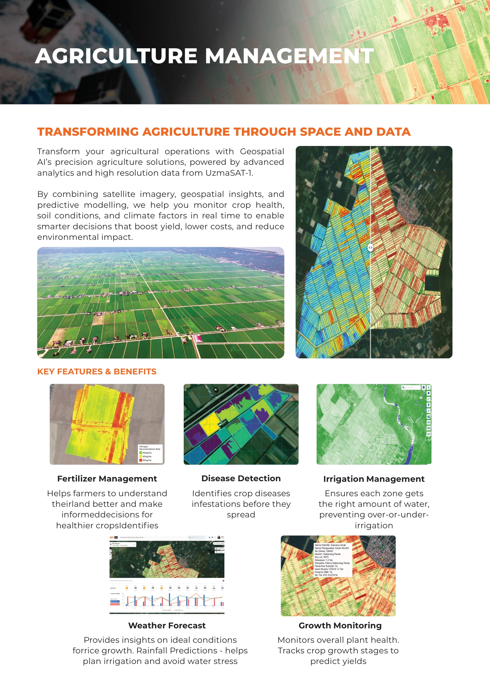
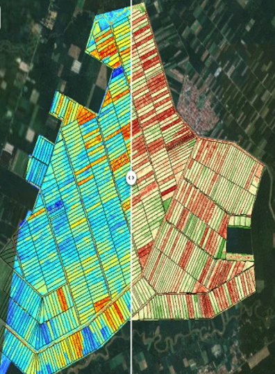
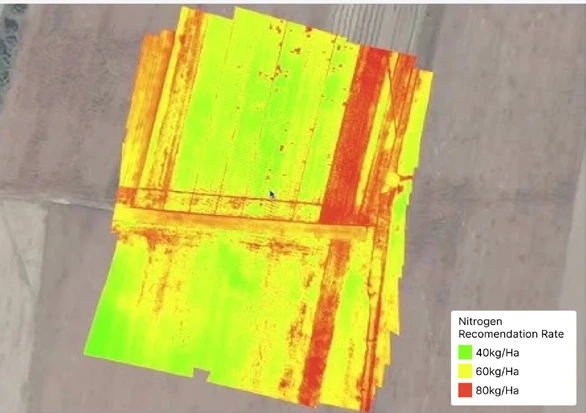
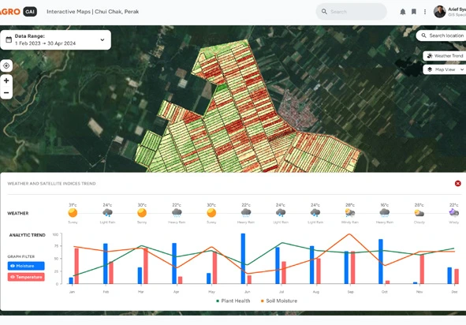
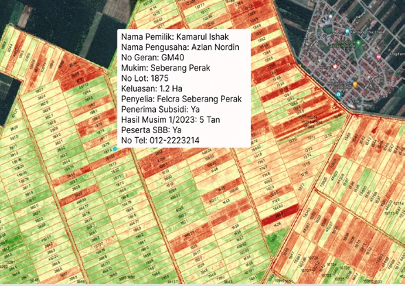
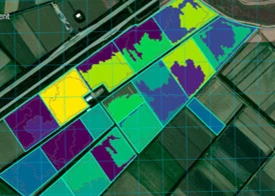
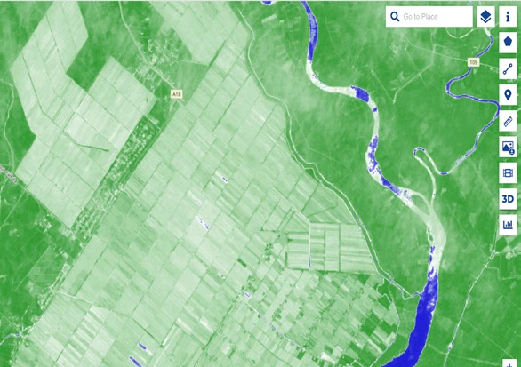
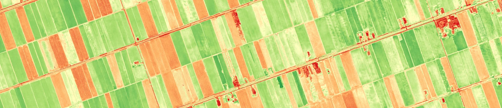

Transforming agriculture through space and data.

Agriculture management
Transform your agricultural operations with Geospatial AI’s precision agriculture solutions, powered by advanced analytics and high-resolution data from UzmaSAT-1. Satellite imagery, geospatial insights and predictive modelling help monitor crop health, soil conditions and climate factors in real time, enabling decisions that boost yield, lower costs and reduce environmental impact.
Key features & benefits
- Fertilizer management: understand land conditions and make informed decisions for healthier crops.
- Disease detection: identify crop diseases and infestations before they spread.
- Irrigation management: provide each zone with the right amount of water, preventing over- or under-irrigation.
- Weather forecast: understand conditions for rice growth and use rainfall predictions to plan irrigation and avoid water stress.
- Growth monitoring: monitor plant health and crop growth stages to predict yields.
In pictures
{kind=link}

{kind=link}

{kind=link}
{kind=link}

{kind=link}
{kind=link}

{kind=link}
{kind=link}

{kind=link}
{kind=link}

{kind=link}
{kind=link}

{kind=link}

{kind=link}
{kind=link}

{kind=link}
Read the complete source transcript
KEY FEATURES & BENEFITS
TRANSFORMING AGRICULTURE THROUGH SPACE AND DATA
Fertilizer Management Disease Detection Irrigation Management
Weather Forecast Growth Monitoring
Transform your agricultural operations with Geospatial AI’s precision agriculture solutions, powered by advanced analytics and high resolution data from UzmaSAT-1.
By combining satellite imagery, geospatial insights, and predictive modelling, we help you monitor crop health, soil conditions, and climate factors in real time to enable smarter decisions that boost yield, lower costs, and reduce environmental impact.
Helps farmers to understand
theirland better and make
informeddecisions for healthier cropsIdentifies
Provides insights on ideal conditions forrice growth. Rainfall Predictions - helps
plan irrigation and avoid water stress
Monitors overall plant health.
Tracks crop growth stages to
predict yields
Identifies crop diseases infestations before they
spread
Ensures each zone gets the right amount of water,
preventing over-or-under-
irrigation
AGRICULTURE MANAGEMENT